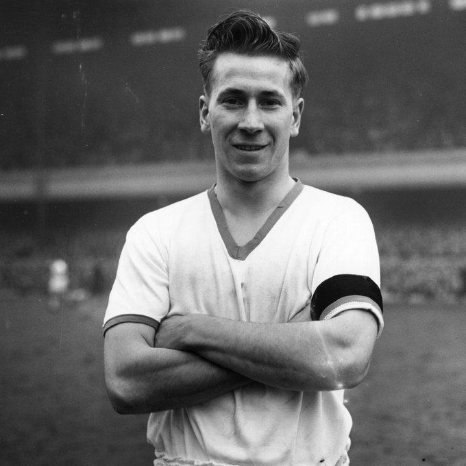
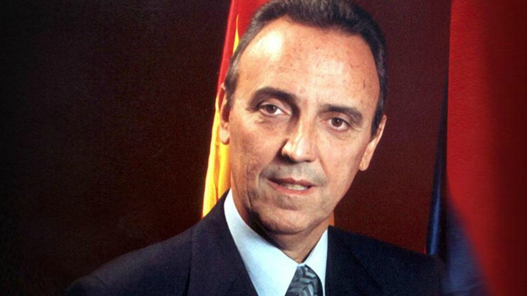
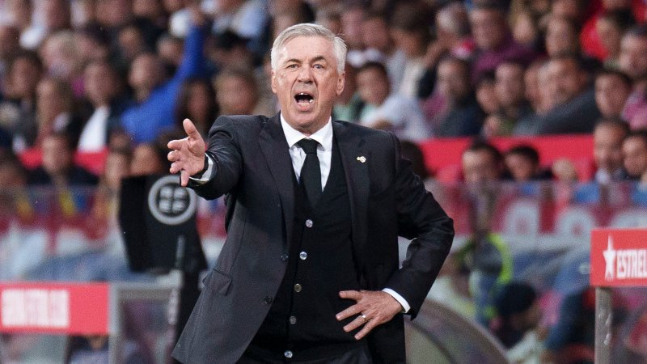
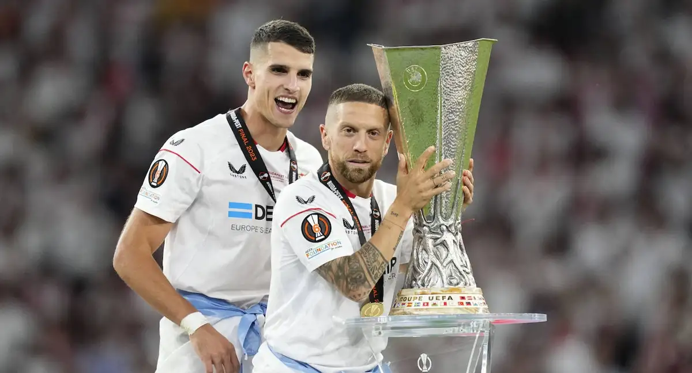

Noticias de deportes 12
Muere Bobby Charlton, una leyenda en el fútbol inglés
Bobby Charlton, leyenda del Manchester United, murió este sábado a los 86 años, informó su familia en un comunicado oficial.
"Con gran tristeza, compartimos la noticia de que Sir Bobby falleció pacíficamente en las primeras horas del sábado por la mañana" ,señala la nota enviada a los medios.
Charlton, diagnosticado con demencia en 2020, murió "rodeado por su familia", detallaron sus allegados, que expresaron su "agradecimiento a todos los que han contribuido a sus cuidados y a tanta gente que le amó y le apoyó"
DISEÑO
"El Barça no ha cometido ilegalidad": Gaspart, sobre el caso Negreira
El expresidente del club en la etapa en que comenzaron los pagos al exdirigente arbitral habló del caso y "celebró que el equipo tenga enemigos" 
El expresidente del FC Barcelona entre los años 2000 y 2003, Joan Gaspart, defendió, en la Asamblea General Ordinaria de socios compromisarios, que el club "no ha cometido ninguna ilegalidad" en alusión al 'caso Negreira'.
El exdirigente de la entidad tomó la palabra en el último turno de intervenciones de la reunión de compromisarios para referirse a los 7,3 millones de euros que el Barça pagó al que fuera vicepresidente del Comité Técnico de Árbitros José María Enríquez Negreira y a su hijo entre los años 2001 y 2018
Estas transacciones empezaron, según la investigación, bajo el mandato de Gaspart, que criticó a aquellos -"los que nos aman", bromeó- que se han adelantado a la decisión de la justicia
En su intervención, el expresidente opinó que el 'caso Negreira' tiene que ver con la ética y, en este sentido, se refirió a los fichajes de Alfredo di Stefano y Luis Figo por el Real Madrid. "Si alguien quiere, un día hablamos del tema ética y ya veremos quién se tiene que esconder", remachó.
Con todo, Gaspart celebró que el Barça tenga "enemigos" porque, en su opinión, el día que no los tenga el club ya no existirá. "Brindo por los enemigos, mientras seguimos unidos nunca nos vencerán", concluyó.
DISEÑO
Ancelotti recurre a la ironía para referirse al arbitraje en el empate del Real Madrid
El entrenador reconoció que de haber dicho lo que pensaba del réferi en el juego ante el Sevilla sería sancionado
Carlo Ancelotti confesó que sus declaraciones en rueda de prensa elogiando el arbitraje del vasco Ricardo de Burgos Bengoetxea en el estadio Ramón Sánchez-Pizjuán ante el Sevilla, era "ironía" porque si decía lo que pensaba le caerían "muchos partidos" de sanción.
"La ironía es la única manera después de este partido", reconoció después de salir de la rueda de prensa a los medios del Real Madrid. "Porque si digo lo que pienso del arbitraje, me caen muchos partidos".
Ancelotti aseguró que su felicidad es dirigir desde el banquillo a su equipo y prefiere no decir lo que piensa para poder hacerlo. "Lo que más me gusta es sentarme en el banquillo del Real Madrid, para evitar suspensiones no digo lo que pienso y uso la ironía".
Antes, en rueda de prensa había dicho que De Burgos Bengoetxea lo había hecho "bien, un buen partido" y que había "acertado en todo". "Ha parado la contra para preservar la salud de un jugador", dijo en la acción en la que se anuló un gol a su equipo por un golpe a Lucas Ocampos por el que no había señalado falta. El Real Madrid también reclamó que era legal el tanto marcado por Fede Valverde en los primeros minutos y pidió un penalti sobre Vinícius Junior.
DISEÑO
El Papu Gómez dio positivo con el Sevilla antes del Mundial y es sancionado por dos años
El jugador acaba de recibir el castigo después de que en noviembre de 2022 se le detectara una sustancia prohibida.
Apenas tres semanas después de firmar por el Monza de la Serie A, Alejandro 'Papu' Gómez ha recibido una dura noticia: las autoridades antidopaje le han comunicado que es sancionado con una suspensión por dos años, según puede confirmar en exclusiva Relevo. El exjugador del Sevilla dio positivo por una sustancia prohibida en un control que se realizó en noviembre de 2022, días antes de la celebración del Mundial.
Todo sucedió en un entrenamiento del Sevilla cuando los doctores acudieron por sorpresa para realizar un control antidopaje. Según la versión del futbolista, días antes había pasado una mala noche lo que lo llevó a tomar un jarabe de uno de sus hijos sin una consulta previa a los médicos del club. Este comportamiento no está permitido por las autoridades, ya que al menos debía haber informado antes de tomarlo. Entonces, el argentino, todavía en la disciplina sevillista, trabajó para poder participar en el Mundial de Catar, al que acudió con su selección tras recibir permiso, pero ahora el castigo pone en jaque su carrera.
El futbolista y el Sevilla tuvieron conocimiento de este asunto desde hace meses, cuando le llegó la notificación, aunque ha sido esta semana cuando han recibido la sanción de dos años. Precisamente, este aspecto supuso un impedimento para buscarle equipo al Papu durante el verano, ya que ningún club quería asumir riesgos ante ese posible castigo que estaba por decidirse. Esta situación provocó que finalmente las partes acordasen la rescisión del contrato del futbolista, que finalizaba en 2024, en el último día de mercado.
De hecho, en principio, el futbolista quería esperar a enero para incorporarse a alguna disciplina una vez supiera si había o no sanción. Sin embargo, acabó comprometiéndose con el Monza, con el que apenas ha jugado dos partidos en octubre. Está por ver si recurre y logra que esa sanción se pueda rebajar. Clave para regatear la retirada, dado que Papu tiene 35 años.
La responsabilidad del argentino
Pese a las alegaciones presentadas por Papu Gómez para evitar una sanción, las normas antidopaje son muy claras y tiene que ser el propio futbolista quien consulte la Lista de Prohibiciones de la Agencia Mundial Antidopaje (AMA). Además, cuando se viola la normativa no sirve de excusa argumentar que un médico le asesoró de manera equivocada, ya que esto no le eximirá de las posibles consecuencias y es el propio futbolista el responsable último de lo que entra en su organismo.
Sí existen excepciones para aquellos deportistas que, por motivos médicos legítimos, tengan que consumir una sustancia o utilizar un método prohibido que figure en la lista podrán hacerlo si cumplen las condiciones que establece el Estándar Internacional para la Autorización de Uso Terapéutico (EIAUT). En ese caso, la autorización de uso terapéutico (AUT) le permitirá recibir el tratamiento sin arriesgarse a ser sancionado si se detectara una sustancia prohibida en un control de dopaje.
Tras la presentación de la solicitud, la estudiará un panel de expertos en medicina seleccionados con experiencia en el tratamiento de deportistas y con conocimientos prácticos en medicina clínica, deportiva y de entrenamiento. Si acuerdan conceder la AUT al futbolista, estará entonces autorizado a tomar la medicación. No obstante, siempre que tenga que someterse a un control de dopaje deberá notificar sobre la AUT y la medicación consumida.
Comunicado del Monza
A última hora de la tarde y tras esta noticia de Relevo, el Monza, actual equipo del Papu Gómez, emitió un comunicado oficial en su página web afirmando haber recibido hoy de FIFA, a través de la federación italiana, una notificación de la sentencia de primera instancia de la Comisión Española Antidopaje contra el futbolista Alejandro Darío Gómez.
El resto del comunicado dice lo siguiente: "La sentencia prevé una inhabilitación para la práctica deportiva durante dos años. Se constató la presencia de terbutalina en las muestras biológicas del futbolista. Se trata de un fármaco que se tomó para calmar una crisis de broncoespasmo, en octubre de 2022, cuando el futbolista estaba inscrito en el Sevilla FC. La positividad es el resultado de una suposición involuntaria. AC Monza se reserva el derecho de evaluar los próximos pasos procesales".